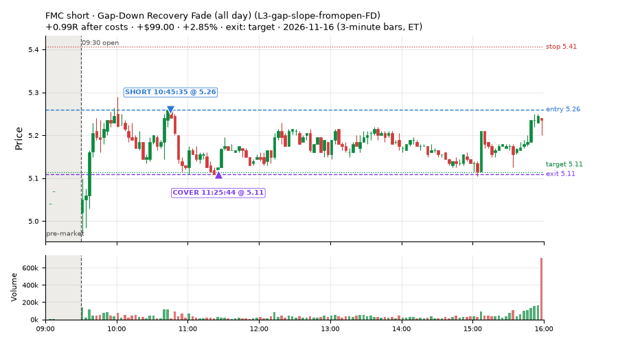
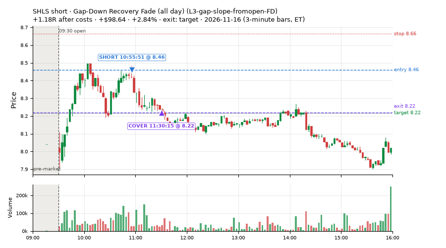
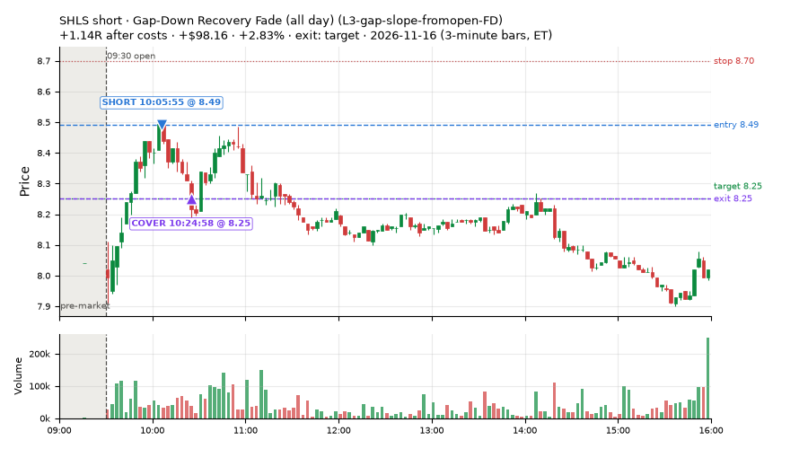
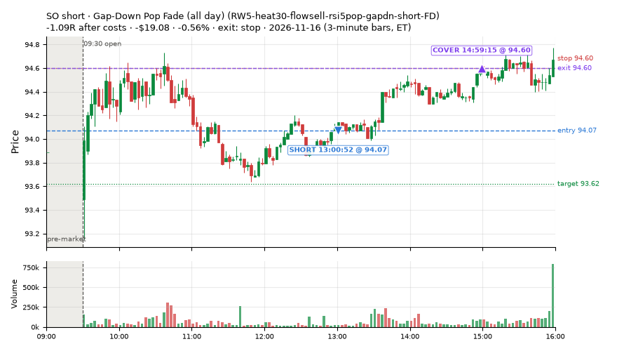
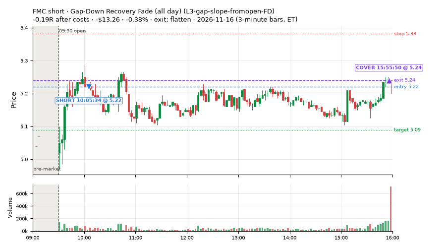
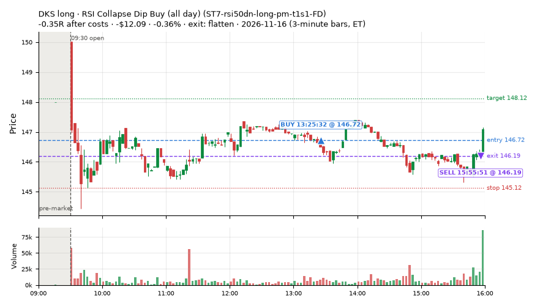
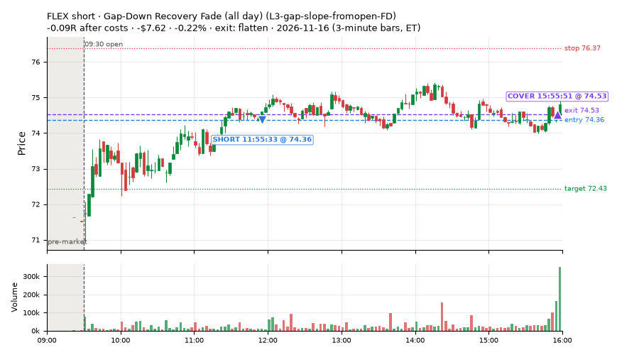
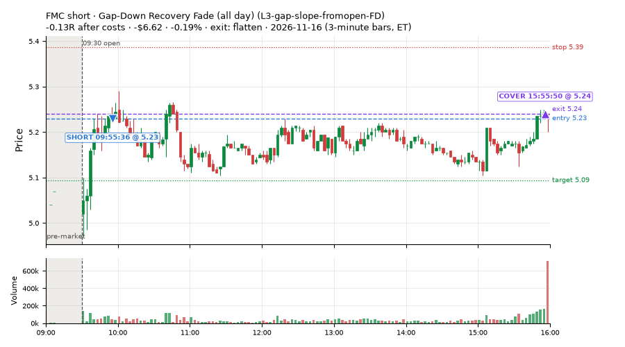

57 trades · win rate 82% · P/L $1,478.68
PROBATION: no live setup has passed both locked test periods. 10 owner-directed setups added 2026-10-08 (MarcoFlow top 5 + 5 new), untested live. RW6G1 (RW6 + VWAP band guard) added 2026-10-09, probation.

| Symbol | Setup | Side | In | Out | Entry | Exit | Exit reason | % gained | P/L |
|---|---|---|---|---|---|---|---|---|---|
| FMC | Gap-Down Recovery Fade (all day) (L3-gap-slope-fromopen-FD) | short | 10:45 | 11:25 | 5.26 | 5.11 | target | +2.85% | $99.00 |
| SHLS | Gap-Down Recovery Fade (all day) (L3-gap-slope-fromopen-FD) | short | 10:55 | 11:30 | 8.46 | 8.22 | target | +2.84% | $98.64 |
| SHLS | Gap-Down Recovery Fade (all day) (L3-gap-slope-fromopen-FD) | short | 10:05 | 10:24 | 8.49 | 8.25 | target | +2.83% | $98.16 |
| Symbol | Setup | Side | In | Out | Entry | Exit | Exit reason | % lost | P/L |
|---|---|---|---|---|---|---|---|---|---|
| SO | RW5-heat30-flowsell-rsi5pop-gapdn-short-FD | short | 13:00 | 14:59 | 94.07 | 94.60 | stop | -0.56% | $-19.08 |
| FMC | L3-gap-slope-fromopen-FD | short | 10:05 | 15:55 | 5.22 | 5.24 | flatten | -0.38% | $-13.26 |
| DKS | ST7-rsi50dn-long-pm-t1s1-FD | long | 13:25 | 15:55 | 146.72 | 146.19 | flatten | -0.36% | $-12.09 |
| FLEX | L3-gap-slope-fromopen-FD | short | 11:55 | 15:55 | 74.36 | 74.53 | flatten | -0.22% | $-7.62 |
| FMC | L3-gap-slope-fromopen-FD | short | 09:55 | 15:55 | 5.23 | 5.24 | flatten | -0.19% | $-6.62 |








Signal to fill: median 1s, 90th percentile 4s (57 trades). Bars close each minute; the order follows the bar close.
Best excursion (MFE): median 0.72R; worst (MAE) median 0.26R. 11% of trades never got +0.25R in our favour; 0 reached +1R and still closed at or below 0.
| Symbol | Setup | Best R | Worst R | Closed R |
|---|---|---|---|---|
| SO | RW5-heat30-flowsell-rsi5pop-gapdn-short-FD | +0.15 | -1.03 | -1.09 |
| FMC | L3-gap-slope-fromopen-FD | +0.80 | -0.38 | -0.13 |
| FMC | L3-gap-slope-fromopen-FD | +0.72 | -0.28 | -0.19 |
| DKS | ST7-rsi50dn-long-pm-t1s1-FD | +0.43 | -0.88 | -0.35 |
| SIVR | RW5-heat30-flowsell-rsi5pop-gapdn-short-FD | +0.70 | -0.85 | +0.04 |
| Entry time | Trades | Win | Avg R | P/L |
|---|---|---|---|---|
| 09:50-10:30 | 4 | 50% | +0.44 | $168.92 |
| 10:30-11:30 | 6 | 83% | +0.60 | $278.58 |
| 11:30-13:00 | 33 | 91% | +0.53 | $854.42 |
| 13:00-14:00 | 4 | 50% | -0.07 | $-3.09 |
| 14:00-16:00 | 10 | 80% | +0.27 | $179.85 |
| Setup | Trades | Win | Avg R after costs | Adj R (net of SPY) | Avg R ex-market (all sessions) | P/L |
|---|---|---|---|---|---|---|
| Gap-Down Recovery Fade (all day) (L3-gap-slope-fromopen-FD) | 31.0 | 84% | +0.53 | +0.19 | +0.08 (beta -0.79, n 149) | $1,065.78 |
| Late-Day ETF Dip Buy (near-miss) (NM-ETF-late-dip-di-long) | 2.0 | 100% | +0.27 | +0.41 | +0.25 (beta +0.11, n 5) | $36.11 |
| Gap-Down Pop Fade, Heavy Selling (all day) (RW3-gapdn-rsi5pop-flowsell-short-FD) | 11.0 | 91% | +0.48 | +0.08 | +0.03 (beta -1.07, n 144) | $258.22 |
| Gap-Down Pop Fade (all day) (RW5-heat30-flowsell-rsi5pop-gapdn-short-FD) | 8.0 | 88% | +0.33 | -0.16 | +0.00 (beta -0.91, n 160) | $96.70 |
| RSI Collapse Dip Buy (all day) (ST7-rsi50dn-long-pm-t1s1-FD) | 5.0 | 40% | +0.09 | +0.63 | +0.15 (beta +0.17, n 32) | $21.86 |
Market direction (SPY, beta 1) accounted for $804.87 of today's $1,478.68; the rest ($673.80) came from the setups themselves. Avg R net of SPY: +0.16 (incl. a hedge leg's cost; report only).
6 setups live today. Today: 164 signals, 57 taken, 21 lost because another setup held the symbol (13%). Since 2026-10-06 (30 sessions): 5291 signals, 1292 taken, 193 lost to other setups (4%). Peak open positions today 42 of 77 slots. Earnings blackout removed 411 symbols before scanning.
Simulated playing time (not live): 3974 what-if trades of signals not taken, avg +0.12R, 63% winners; of them 193 lost to another setup (avg -0.12R).
Silent: intraday_momentum · Crowded out: MF4-h40-open-flowsell, MF3-open-flowsell-rsi5hi, MF5-flowsell-vwapup-rsi5hi · Starved: MF2-open-rsimidhi-flowsell
| Prio | Setup | Today sig / taken | Sessions | Signals / taken / trades | Taken/day | Expected/day | Lost to other setups | Lost to (setup n) | Top skip reasons | SIMULATED: not-taken n / avg R / win | Verdict |
|---|---|---|---|---|---|---|---|---|---|---|---|
| 1 | Late-Day ETF Dip Buy (near-miss) NM-ETF-late-dip-di-long | 2 / 2 | 4 | 5 / 5 / 5 | 1.25 | – | 0 | – | – | 0 / – | slow 6.2 entries/week; ~10 weeks to 60 trades |
| 2 | Gap-Down Pop Fade (all day) RW5-heat30-flowsell-rsi5pop-gapdn-short-FD | 10 / 8 | 22 | 228 / 160 / 160 | 7.27 | 12.79 | 0 | – | spread / quote / size 26, daily loss cap 21, not shortable / shorts off 20 | 68 / -0.08R / 44% | ok 36.4 entries/week |
| 3 | Gap-Down Pop Fade, Heavy Selling (all day) RW3-gapdn-rsi5pop-flowsell-short-FD | 16 / 11 | 22 | 246 / 144 / 144 | 6.55 | 13.59 | 1 | CWT14-failbrk-pdl-p10-lowvol-long 1 | not shortable / shorts off 35, daily loss cap 33, spread / quote / size 33 | 102 / +0.13R / 58% | ok 32.7 entries/week |
| 4 | RSI Collapse Dip Buy (all day) ST7-rsi50dn-long-pm-t1s1-FD | 7 / 5 | 16 | 58 / 32 / 32 | 2.00 | 2.17 | 0 | – | spread / quote / size 24, daily loss cap 2 | 26 / +0.23R / 62% | slow 10.0 entries/week; ~6 weeks to 60 trades |
| 5 | Gap-Down Recovery Fade (all day) L3-gap-slope-fromopen-FD | 128 / 31 | 14 | 2853 / 149 / 149 | 10.64 | – | 54 | L3-gap-slope-fromopen-FD 54, L3-gap-slope-rsi5hi-FD 14 | not shortable / shorts off 1776, per-setup cap 648, spread / quote / size 116 | 2699 / +0.21R / 67% | ok 53.2 entries/week |
| 6 | Big Loser Flush Buy NS5-sma50-flush-oversold-long | 1 / 0 | 28 | 54 / 35 / 35 | 1.25 | 2.41 | 0 | – | daily loss cap 13, spread / quote / size 6 | 19 / +0.01R / 53% | slow 6.2 entries/week; ~10 weeks to 60 trades |
Every trade is attached as a CSV you can open and edit in Excel or Google Sheets. Live page: https://misiti15.github.io/MCF/live/